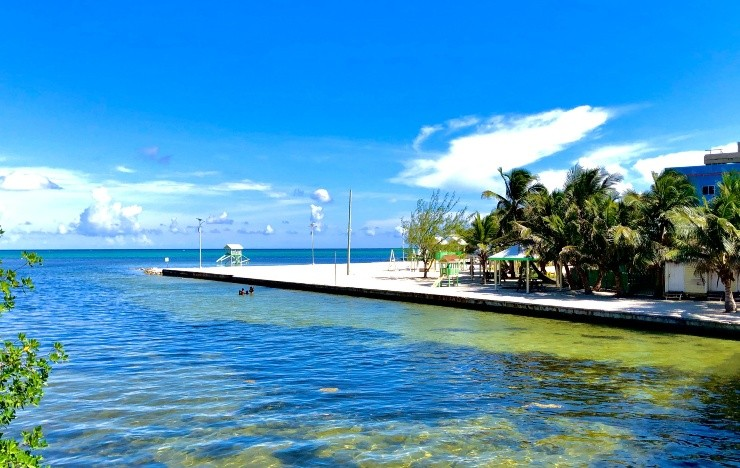
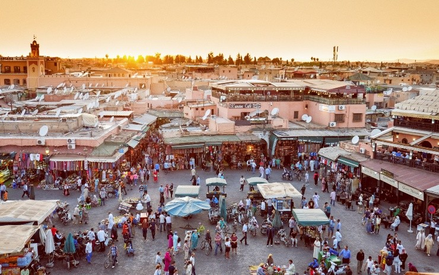
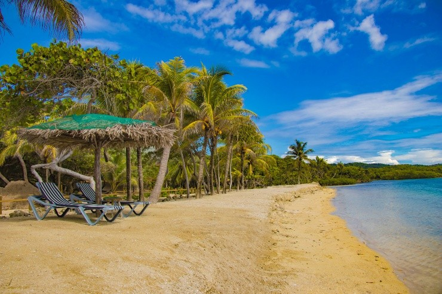
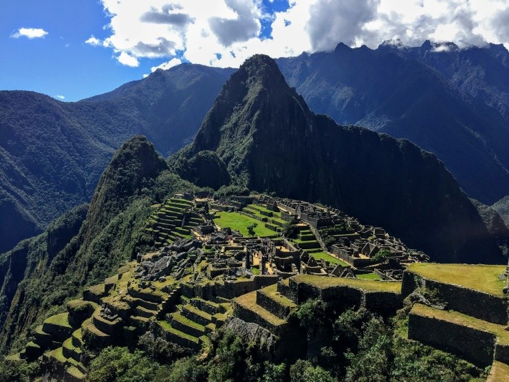

Ya sea por la riqueza histórica, por la grandilocuencia de la naturaleza o por la capacidad de relajación, existen diversos puntos en el planeta que atraen a una enorme cantidad de visitantes.
Se considera que la Polinesia francesa es uno de los destinos más exclusivos del mundo, uno de esos lugares que todos desean conocer pero que su lejanía implica una inversión enorme en el traslado y el hospedaje.

Emplazado en la Centroamérica continental resalta este mágico país de Belice, pegado a México, pero con muchas beldades que lo transforman en un destino espectacular. Una de sus islas, conocida como Cayo Ambergris presenta una maravilla, el hoyo azul.
Las Islas Caimán disponen de cientos de atractivos para los viajeros, en primera instancia por la preciosidad del mar Caribe. Este país que está compuesto por tres islas, hay una que sobresale la Gran Caimán, la de mayor extensión y muy cercana a Cuba y Jamaica.

Inmersa en el centro de Marruecos asoma con fuerza la ciudad de Marrakech, que ha logrado superar en interés y movimiento a la capital del país, Rabat. El incesante trajinar por sus calles y la desembocadura en la inmensa plaza de Yamma el Fna son estímulos suficientes para zambullirse en esta urbe.
Probablemente la ciudad más famosa de todo Sudamérica, ha adquirido una relevancia descomunal por sus características y prácticamente los europeos, asiáticos y norteamericanos desean pasar alguna vez por esas playas y sobre todo vivir en primera persona los magnánimos carnavales. La mentada alegría brasilera se percibe a cada paso y aporta una atmósfera perfecta. Ni hablar de las híper conocidas playas de Ipanema o Copacabana. En tanto que la estatua del Cristo Redentor se convirtió con los años en una de las postales más viralizadas en el planeta. Todo esto tiene Río de Janeiro, lo que motivó por ejemplo a que Disney realizara una película animada con su nombre, con una historia emotiva que acontece en sus rincones.

Las playas se erigen en uno de los principales estímulos de los turistas, una gigantesca mayoría anhela un periodo vacacional en ese entorno natural, donde el mar y la arena generan un contexto perfecto para el descanso. En ese aspecto, todos los países con acceso al mar Caribe toman la delantera y ahí se destaca la isla de Roatán, que forma parte de un archipiélago de cayos de Honduras. Uno de los fuertes de ese paraíso se vincula con sus arrecifes y vida marítima, que invita a sumergirse varios metros en el agua a disfrutar de toda esa belleza.

En las altísimas cumbres de la Cordillera de los Andes aparece colgando de las montañas la misteriosa Machu Picchu, el epicentro de la civilización Inca. Un recóndito destino, que encierra un halo de enigma y sobre todo una energía poderosa. Claro que acceder a esas ruinas implica un esfuerzo, por las inclemencias de la altitud y el camino sinuoso y complejo. Cuzco es el portal para acercarse a toda esta majestuosa cultura incaica y es la ciudad para hospedarse y desde ahí emprender excursiones para adentrarse en el Valle Sagrado, entre otros atractivos. Por otro lado, en el centro de la urbe también abundan estímulos como los mercados locales y la gastronomía tan típica de esos lares.
